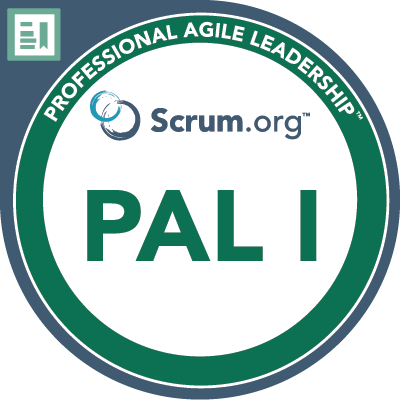

Wilco Visser Test Management & Consultancy
Test Management & Consultancy
I help organizations launch and manage test projects and improve on quality processes.
Get in touchAbout Me
I have been testing & delivering software projects since 2010. In those years I contributed in various roles to digital transformations and startup projects in the Netherlands and abroad. I have developed a diverse skillset and can be described as a self-starting Test Consultant with a hands-on approach and delivery mindset.
I am ISTQB certified and have a proven track record in the telecom, mortgage, media and digital industries. Working for global brands like Vodafone and T-Mobile helped me adapt quickly to new organizations and thrive in fast-paced delivery environments.
I value quality, open communication and love working with skilled development teams that build and deliver great quality software.

Foundation Level

Scrum.org

Scrum.org
- Certified Software Tester (CSTE) — ISTQB, 2021
- Enterprise Product Management Fundamentals — Microsoft, 2025
- Agile Scrum Foundation Certificate — EXIN, 2016
- Change & Inspire with Storytelling — ICM, 2020
- Developing Mobile Apps — NTI, 2019
On Test Management
Since the early 2000s, software development practices have evolved from a traditional waterfall approach to more popular Agile methodologies, such as Scrum and SAFe.
The popular Scrum methodology puts the responsibility for planning and organizing testing with the development team, more in particular with the Agile Test Engineer. But the output of an Agile development team is often part of an operation that is bigger than one Agile team. Interfaces with external software and dependencies with other development teams push the borders of a test project beyond the Agile team.
A good Test Manager is able to oversee these borders and leads the act of creating a holistic Test Policy for the organization. The Test Policy promotes alignment and communication between Agile Teams and testers, and serves as a framework for the quality and quality improvement processes in an organization. It is the basis for creating project-specific quality plans and has the best chance of success when co-created with the Test team and other important stakeholders.
I have experience in creating Test Policies and strategic test plans for organizations and projects of all shapes and sizes. The test policy of a corporate enterprise can be significantly different than the one of a startup or SME. But there is one common goal that the Test Manager should always be working for: to create the best environment for the test team to thrive in, so that the organization can deliver great quality software. Whether that is in a corporate, waterfall, Agile or any other setting.
Services
As a T-shaped professional, I am broadly skilled in testing practices such as test execution and automation. I specialize in Test Management.
Test Management
As Test Manager I help organizations improve testing processes and manage test projects from planning to delivery.
Test Execution
As much as I enjoy managing test projects, I also love to work hands-on and participate in functional Test Execution.
Test Automation
In recent years, test automation has greatly developed as a skill. I set up test automation projects for front- & backend processes.
Get in Touch
Interested in my availability? Reach out and let's talk about your test project.
info@wilcovisser.com